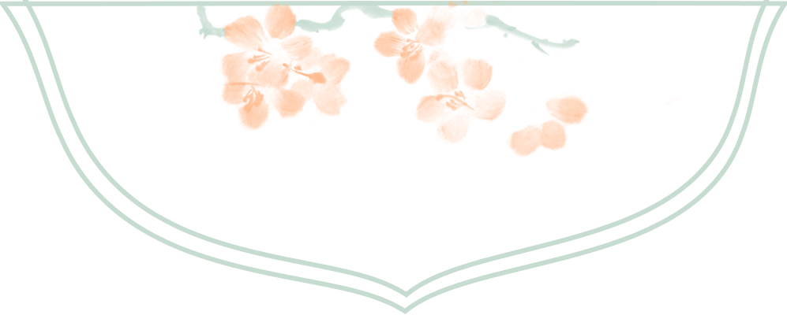

【徜扬恣肆·十二】天地万物本无趣，只因有人便生情
天地万物本无趣
只因有人便生情

来源 | 行者无疆实践团
文字 | 高懿玢
排版 | 赵庭芳
审核 | 付媛 康艳虎

天地万物本无趣
只因有人便生情

来源 | 行者无疆实践团
文字 | 高懿玢
排版 | 赵庭芳
审核 | 付媛 康艳虎
SAME EXPEDITION / 同期推文

行醉淮扬许无疆为了调研淮扬文化的内涵及其对人文精神的影响，本着“服务母校、宣传大工，传承大工优良学风、展示我校学子风采”的实践原则，深入了解淮扬文化的历史发展及现代背景等问题，

SUMMER寓绻淮扬，一梦扬州行者YANG无疆ZHOU一纸梅兰竹，道尽文人风骨几句荒唐言，叹尽骚客凌志一湖胭脂泪，倒映世间繁华壹初识扬州，是“烟月扬州如梦寐”，如同烟雨江南中彳

挽一樽清月待万程流光行者无疆寓绻淮扬千般荒凉，以此为梦；万里蹀躞，以此为归。GO STRAIGHT FORWARD初识行者，是漫漫黄尘铺就的敦煌，是神秘瑰丽的莫高窟；再识行者，